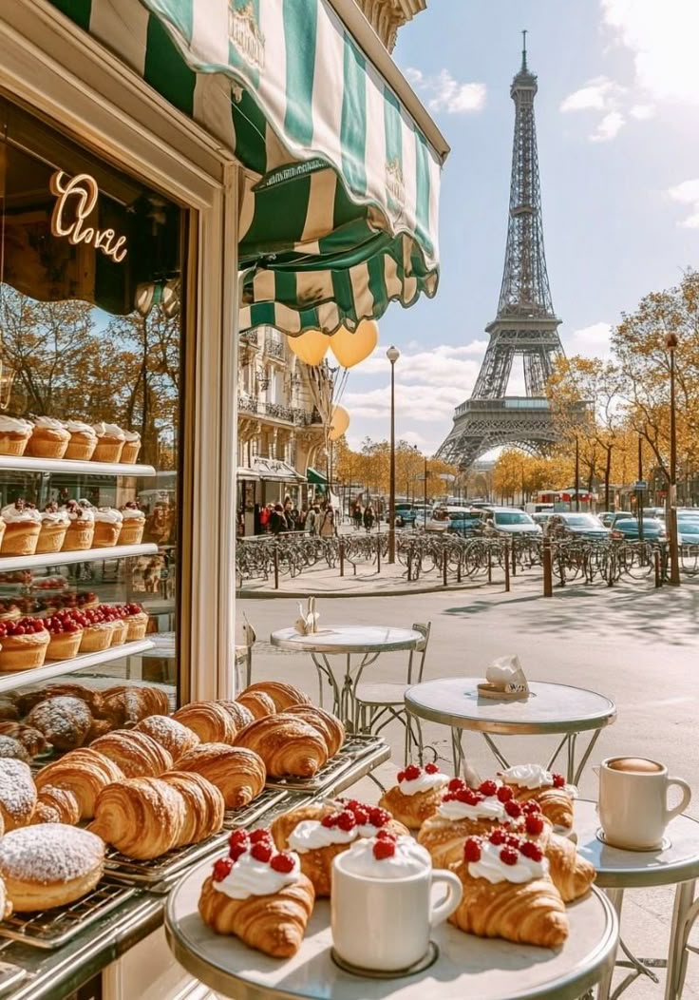
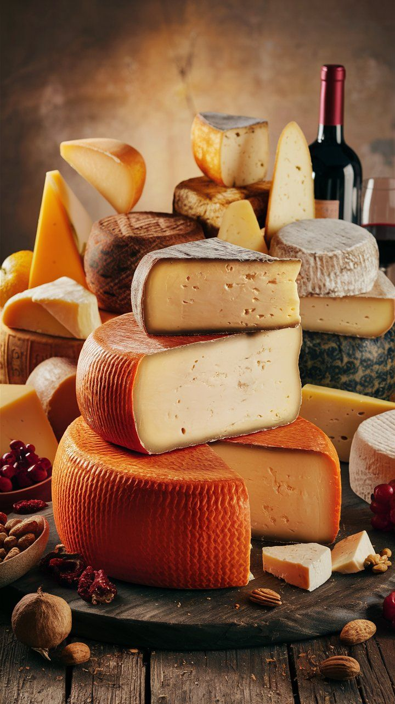
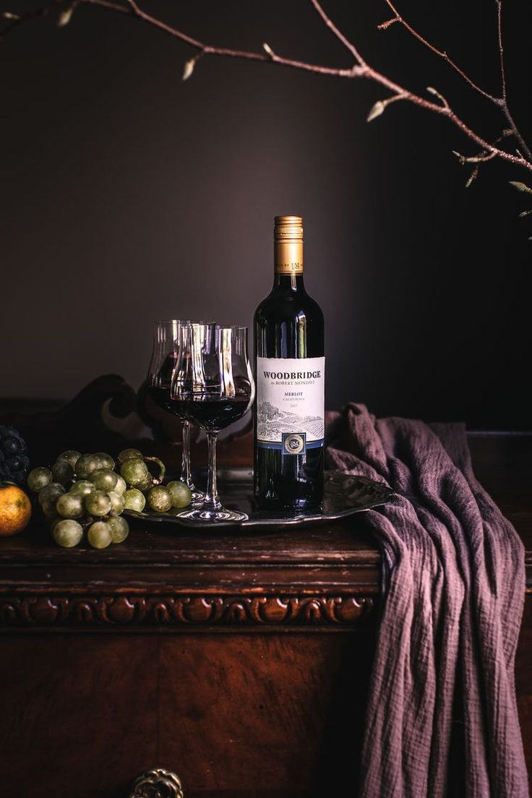

Kruvasan ve baget ekmek Fransız mutfağının simgesidir.Kruvasan ve baget ekmek, Fransız mutfağının en tanınmış ve simgesel lezzetlerindendir. Taze fırınlanmış kruvasan, kat kat yapısı ve tereyağlı aromasıyla kahvaltıların vazgeçilmezi olurken, uzun ve çıtır baget ekmekler, peynir, şarküteri ve yemeklerle birlikte sofralara eşlik eder. Fransa’da fırınlar sabahın erken saatlerinden itibaren bu lezzetleri sunar ve günlük yaşamın bir parçası hâline getirir. Hem yerel halk hem de turistler için kruvasan ve baget, sadece yemek değil, Fransız kültürünü deneyimlemenin küçük ama anlamlı bir yolu olarak öne çıkar

Peynir çeşitleri Fransa mutfağının önemli bir parçasıdır. Peynir çeşitleri, Fransız mutfağının en önemli ve zengin parçalarından biridir. Camembert, Brie, Roquefort ve Comté gibi ünlü peynirler, farklı bölgelerin karakteristik tatlarını yansıtır. Peynirler genellikle yemeklerin yanında, şarapla eşleştirilerek veya tatlılarla birlikte sunulur. Fransa’da peynir, sadece bir yiyecek değil, aynı zamanda kültürel bir deneyimdir; her peynirin kendine özgü yapım süreci, aroması ve servis önerisi vardır. Bu çeşitlilik, Fransız mutfağını hem lezzet hem de gastronomik açıdan keşfetmeyi unutulmaz kılar.

Şarap kültürü dünya çapında ünlüdür.Fransa’nın şarap kültürü, dünya çapında ün kazanmış ve ülkenin gastronomik mirasının ayrılmaz bir parçasıdır. Bordeaux, Burgundy ve Champagne gibi bölgeler, ünlü üzüm bağları ve prestijli şaraplarıyla bilinir. Şarap yapımı, yıllar süren deneyim, titiz üretim süreçleri ve bölgesel özelliklerin birleşimiyle ortaya çıkar. Tadım etkinlikleri, bağ turu ve şarap fabrikası ziyaretleri, hem şarap severler hem de kültürel deneyim arayanlar için unutulmaz fırsatlar sunar. Bu kültür, Fransa’yı sadece bir tat destinasyonu değil, aynı zamanda zengin bir tarih ve gelenek deneyimi sunan bir ülke hâline getirir